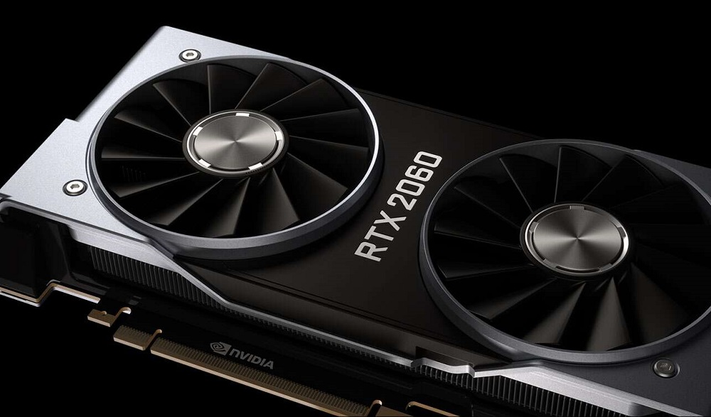
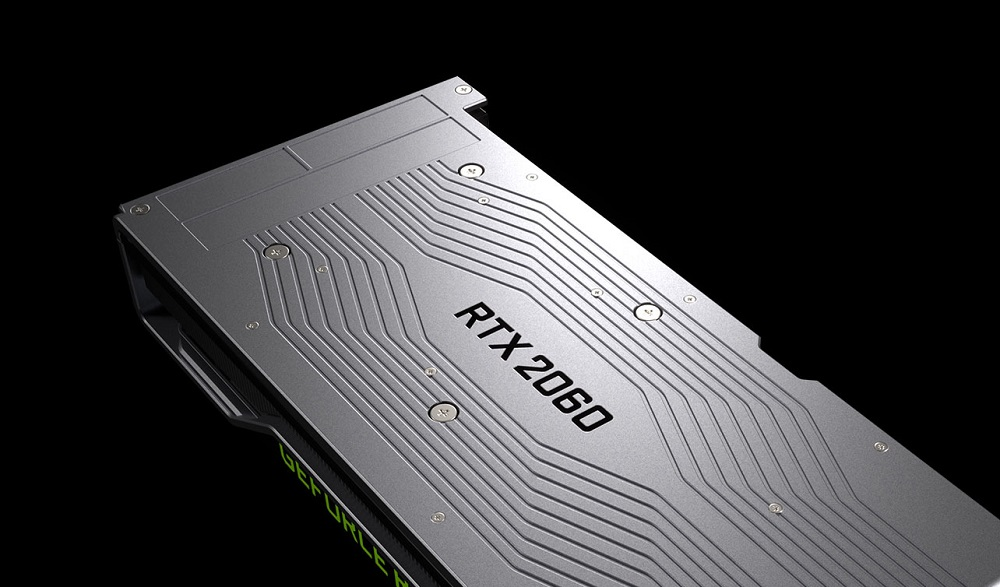
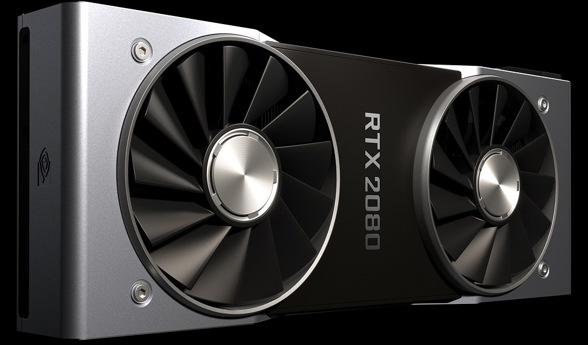
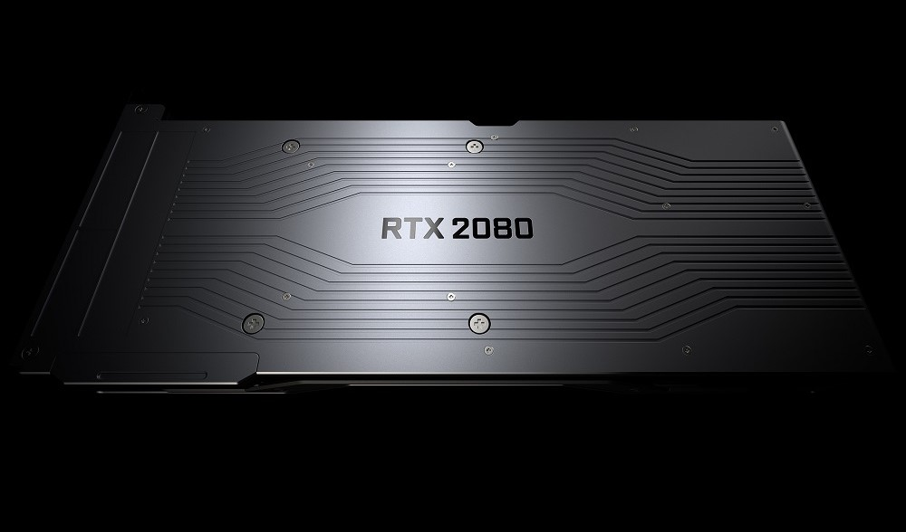
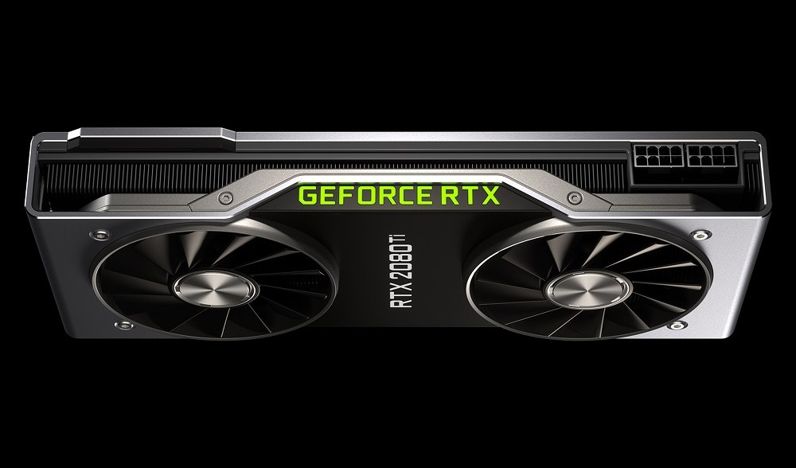
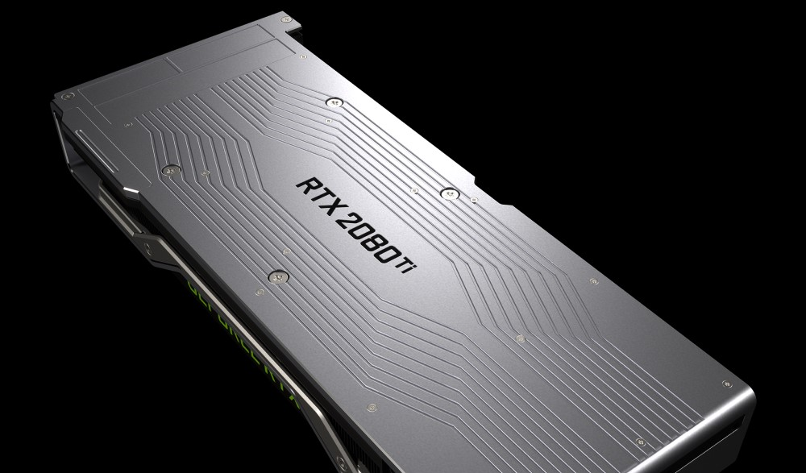

- 
- 
- 
- 
- 
- 
NVIDIA TURING
GeForce RTX™ 显卡基于 Turing GPU 架构和全新的 RTX 平台，其性能表现相较上一代显卡提升最高可达 6 倍，同时为游戏引入了全新的实时光线追踪和 AI 技术。
GEFORCE EXPERIENCE
捕捉并与好友分享视频、屏幕截图，自动更新驱动程序，优化游戏设置。GeForce Experience™ 面面俱到，是 GeForce 显卡不可缺少的伴侣。
优化游戏设置
通过配置游戏的图形设置，GeForce Experience 可以让您的 PC 游戏体验更加轻松。不知道在“守望先锋 (Overwatch)”中设置何种纹理过滤级别？不用担心，NVIDIA 可以利用 NVIDIA 云数据中心的强大功能来测试数千种 PC 硬件配置，找到性能和图像质量的最佳平衡。然后，会自动根据您 PC 的 GPU、CPU 和显示器来配置个性化图形设置。